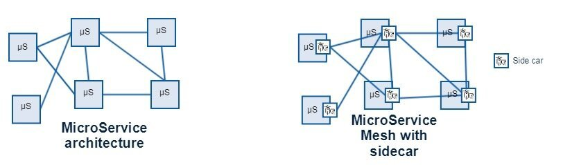
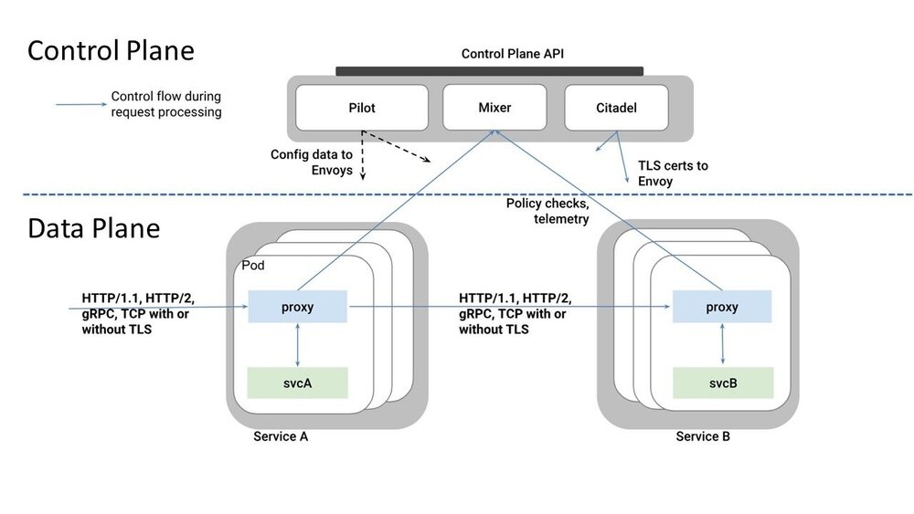
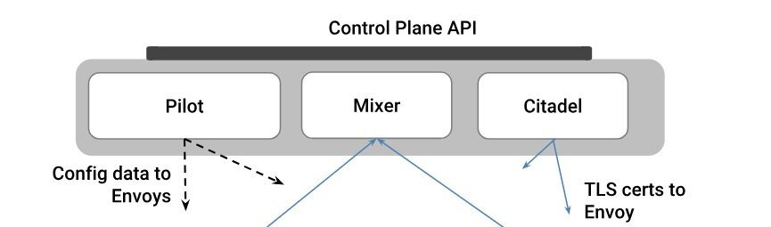
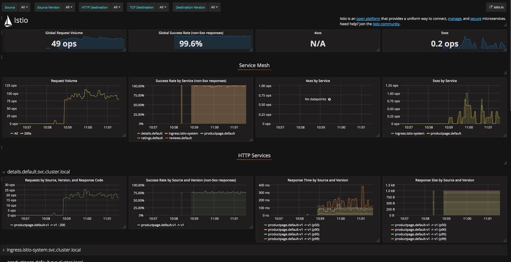
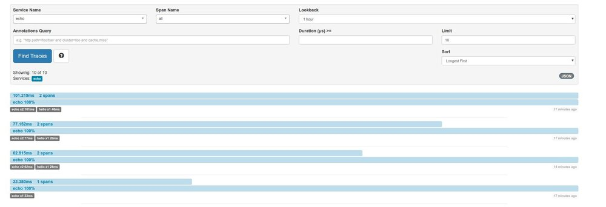

“它是一只鸟，它是一架飞机，它是超级……”。不，等等，它是Istio！即使你眯着眼睛，也能够看出来！什么是Istio？超级英雄有各种形状和大小! 今天，在微服务架构中，Kubernetes是超人。它很容易被认出来，它是当今最强大的云（和本地）超级英雄：刀枪不入，飞来飞去，总是随叫随到，安全，值得信赖…
正如电影《蚁人2：黄蜂女现身》，我想谈谈微服务架构中最小的超级英雄，被称为Istio！Istio拥有超级英雄的一些最佳品质，混乱必定被遏制，并保卫银河系的正常秩序。
在漫画的世界中，最小的超级英雄可以说是Ant-Man。在微服务的世界中，它绝对是Istio，就像Ant-Man一样，Istio小巧，快速，灵活，强大。超人和Kubernetes非常适合解决大问题，但在狭小的空间里它们反而显得很笨拙并且很慢。Ant-Man和Istio则在这些环境中表现出色，事实上，它们正是出于这个原因而设计的（关注点分离SOC）。
Istio - 微服务部署的小英雄 - 就像Ant-Man（图像链接）
Istio提供统一方法来管理，保护和监控微服务。我们之前听过这个，对吧？Netflix技术栈提供Eureka（路由），Hystrix（弹性/容错）和Zuul（安全/ API管理）。Kubernetes也解决了许多同样的问题; 那么，令人奇怪的是为什么Istio很重要？
Istio于2017年5月由Google，IBM和Lyft联合推出。Istio并没有像Kubernetes那样大张旗鼓-有点像《复仇者联盟3-无限战争》那样炒作和《蚁人2：黄蜂女现身》低调对比，但它确实有独特的作用。它起着微网关的作用，带来了巨大的价值––因为它简化了困难问题，使开发变得更容易。
微网关的一个关键作用是降低了开发人员工作的复杂度。开发人员可以专注于重要的业务逻辑，而不用担心他或者她的服务如何处理常见的网络功能，如路由和负载均衡；弹性功能，如重试或者超时；安全功能，如身份验证，授权和服务级别的监控和跟踪。
Istio基于轻量级的Sidecar实现管理服务之间的流量。为了在微服务架构中支持Istio，部署Sidecar代理（基于Envoy）被部署到整个环境中。Sidecars负责拦截服务之间的网络通信。Envoy支持针对自定义协议需求的L3/L4过滤器和针对HTTP/2流量的L7路由。当您部署了所有的Sidecar的时候，就获得了服务网格！

带有和不带sidecar的微服务架构。使用sidecar=服务网格
如果仔细观察设计，我们就能发现架构设计的优雅。考虑到Envoy是以“进程外”的方式部署，这意味着它和服务进程相互独立，由此带来了好处。此外，由于它不在服务进程内，因此可以提供治理层，而无需嵌入类库并在服务代码中提供丑陋的注释（如Hystrix）。最后，也是最显而易见的，它解决了跨语言问题。大家可以在任何微服务之前部署Envoy代理，不论服务的原始开发语言：java，javascript，go，比较老的开发语言，甚至COBOL（不开玩笑，如果它运行在容器中，没问题）。作为开发人员，您仅仅需要关注在能为公司赚钱的业务逻辑上，而不是微服务编排的复杂性问题上。

Istio概述（图像链接）
{kind=link}
上图描述了Istio技术栈的主要组件。该图可以在逻辑上分为两部分：
- 数据平面是由一组调解和控制微服务之间的所有入口和出口的网络通信的Envoy代理组成，数据平面也作为策略执行者并且可以收集遥测信息。就像Ant-Man一样在服务之间快速来回跑，确保微服务之间正常运行。数据平面提供以下功能:
| 入口功能 | 出口功能 |
|---|---|
| 认证 | 服务认证 |
| 授权 | 负载均衡 |
| 速率控制 | 重试和断路器 |
| 负载卸除 | 细粒度路由 |
| 遥测 | 遥测 |
| 请求跟踪 | 请求跟踪 |
| 故障注入 | 故障注入 |
- 控制平面是负责管理和配置代理服务器完成流量路由，配置Mixer组件执行策略和收集遥测信息。可以把它想象成Ant-Man获得如何完成任务的指挥中心。

Envoy代理从Pilot得到它的流量管理规则。Pilot允许您指定要用于在代理之间路由流量的规则，以及配置故障恢复功能（例如超时，重试和断路器）和故障注入。
Mixer 负责在服务网格上执行访问控制和使用策略，并从Envoy代理和其他服务收集遥测数据。
Citadel 通过内置身份和凭证管理提供强大的服务到服务和最终用户身份验证。
我们一直在我们的环境中尝试Istio，看看它到底能为我们提供什么，以及它如何帮助我们将微服务带入生产准备阶段。Istio为我们提供了大量开箱即用的可见性，而团队无需提供服务。另外，请记住，我们使用的一些服务还没有在内部构建，因此Istio允许我们通过捕获和记录入口和出口周围的数据点来“窥探”这些黑盒子。

Istio Dashboard（使用Grafana Istio附加组件）显示微服务指标（图像链接）
此外，由于Istio控制服务的所有入口和出口流量，因此可以使用Zipkin等工具捕获和显示复杂的微服务链路跟踪。

Zipkin跟踪服务之间的调用
Istio采用外交官模式，使其易于扩展。Istio可以插入许多不同的指标/遥测或日志系统，也可以用于执行用户自定义策略。从根本上说，您可以添加现有适配器或为您想要交互的系统构建自己的适配器。
正如我们之前阐述的那样，当服务与另一个服务交互时，网络上可能出现许多问题。Istio旨在通过阻止连锁故障并支持采用稳定性模式来提高弹性。Istio允许您在不更改应用程序代码的情况下使用断路器，超时/重试，速率限制和其他高级弹性功能。它甚至可以让您通过故障注入进行查看服务在故障情况下的行为（中止，响应延迟等）。
就像即将上映的电影一样，我希望你现在知道微网关和Istio比你想象的要强大得多。
图片来自《蚁人2：黄蜂女现身》预告片
有关更多microgateway信息，请阅读本系列中的其他博客：
作者简介：

David是Axway的SVP工程师，负责指导Axway平台未来架构。 API管理平台的专家，包括API网关，API管理器 和API门户。